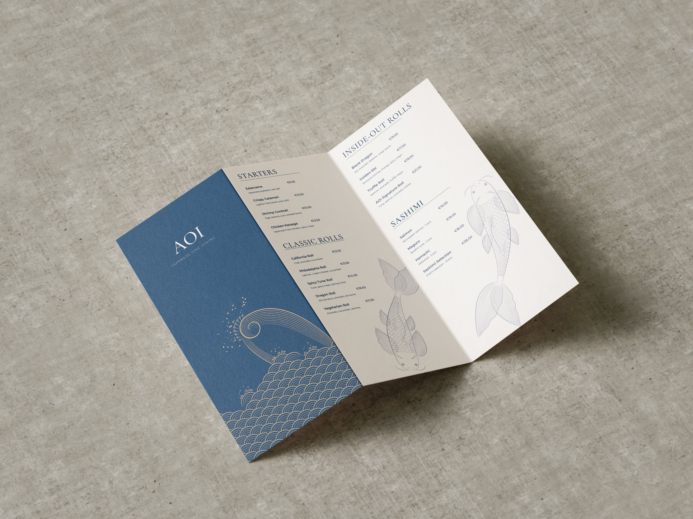
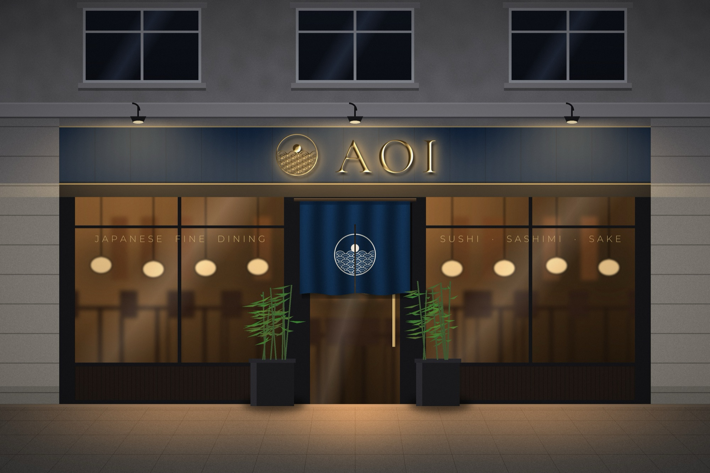
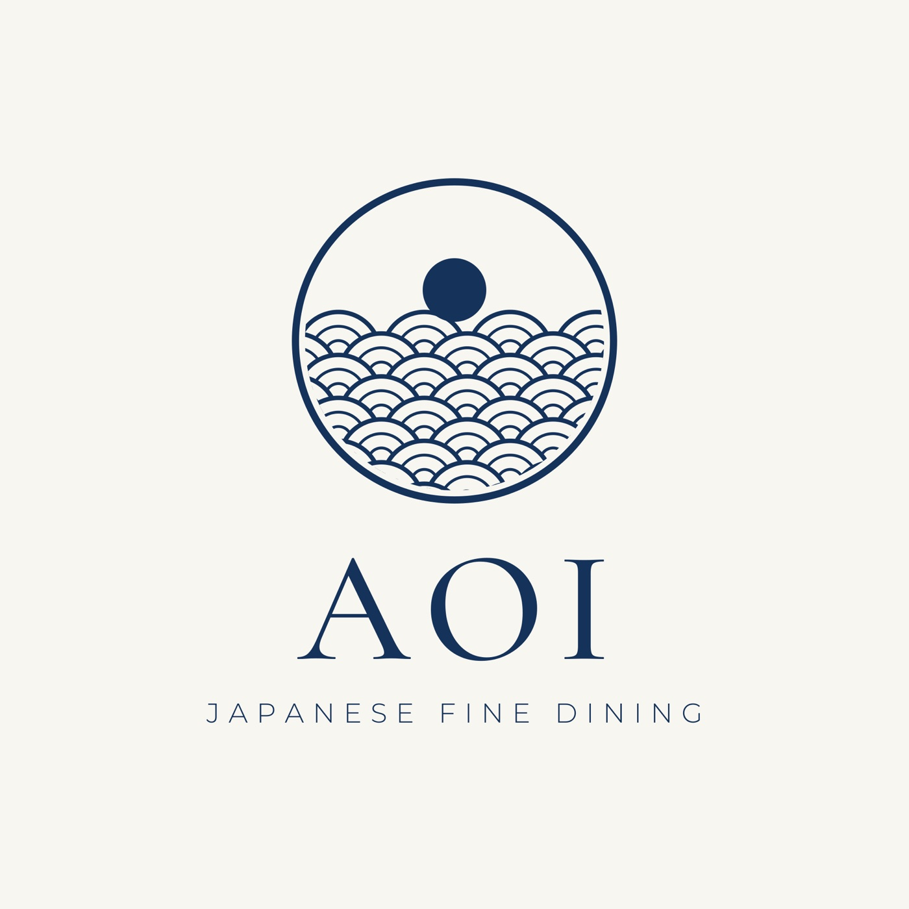
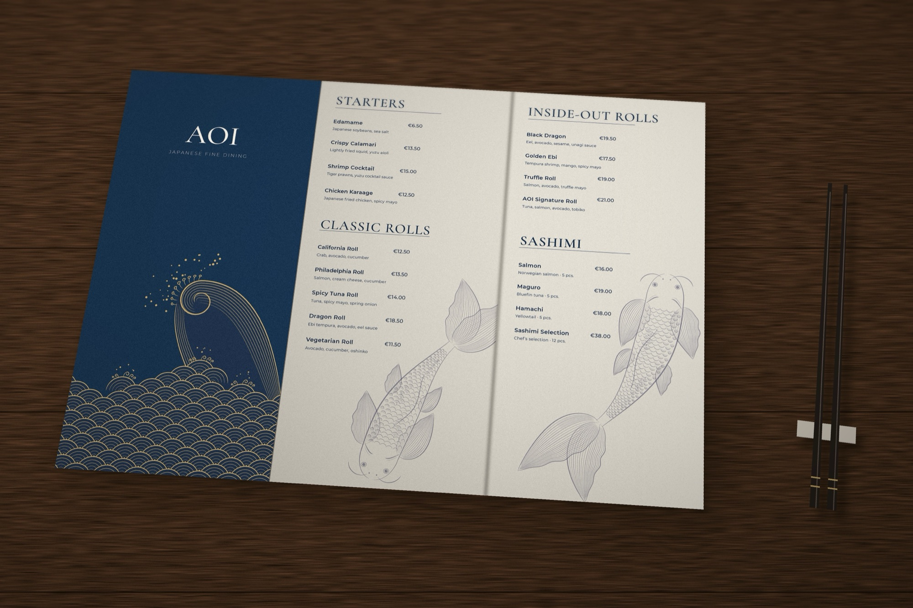
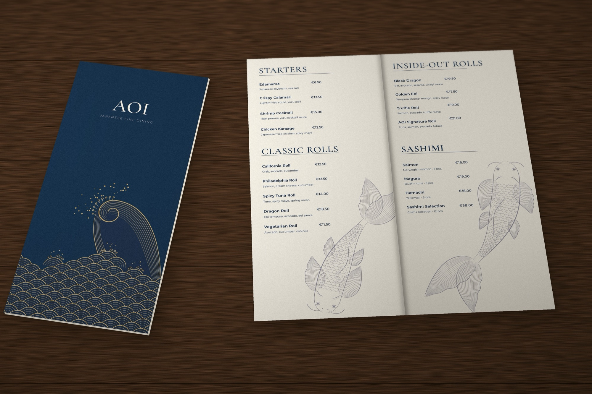
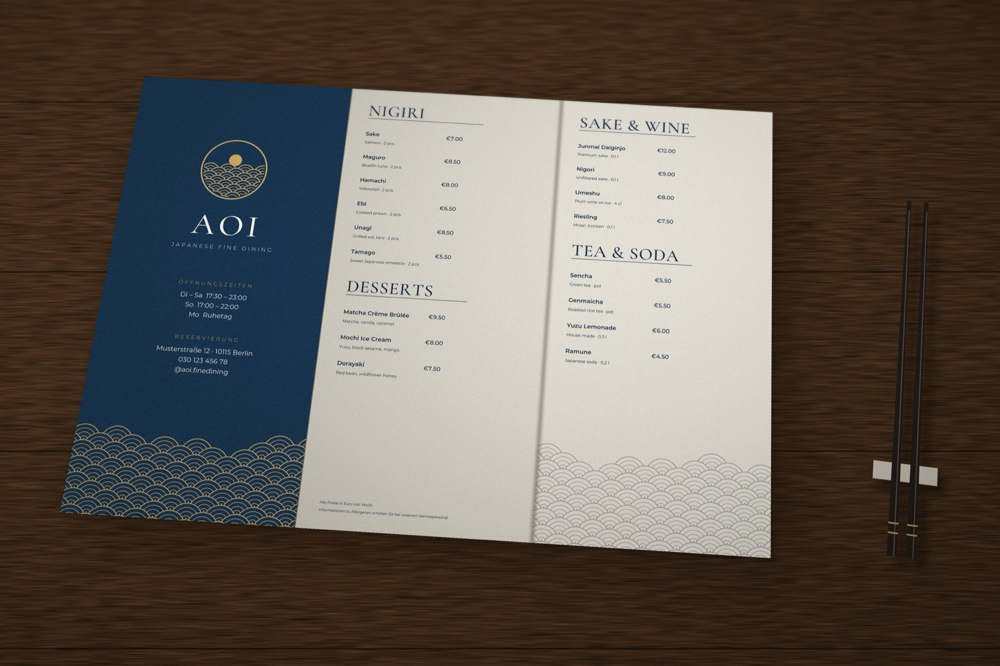
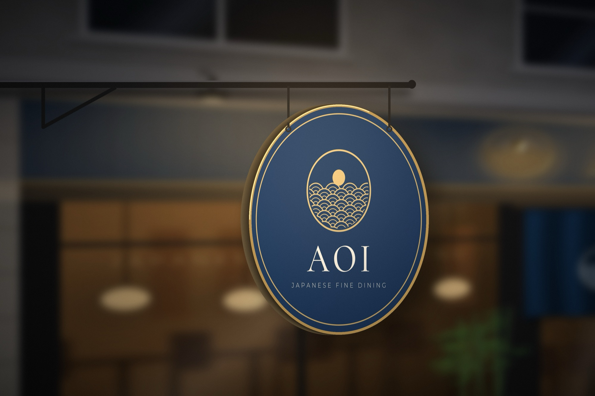

Aoi
- Client
- AOI Japanese Fine Dining (concept)
- Year
- 2025
- Scope
- Identity, Menu, Signage
A concept identity for a Japanese restaurant in Berlin. The logo shows a moon rising over seigaiha waves, in deep indigo and gold. I also designed the menu with engraved koi illustrations, the facade and a hanging sign.







